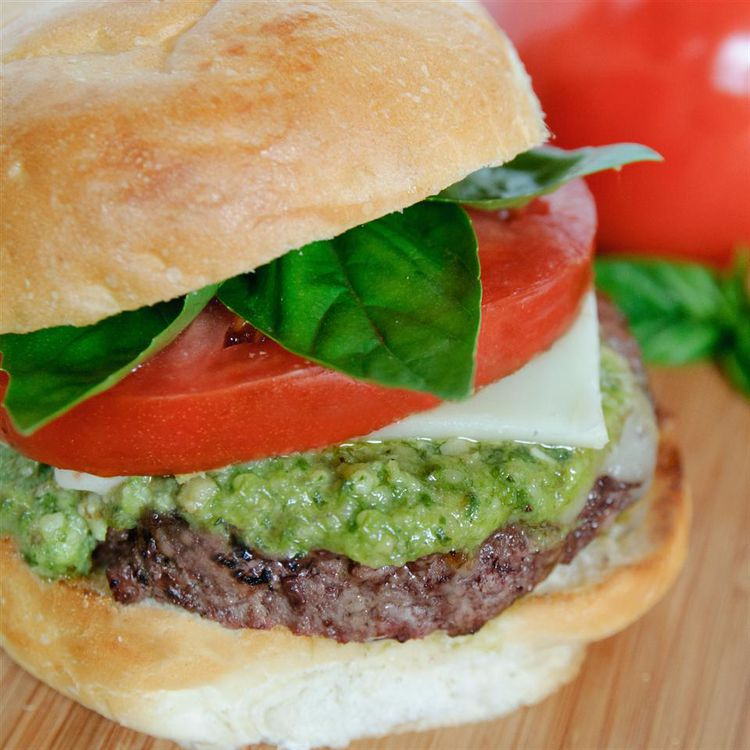

Caprese Burger Recipe

I am always looking for fun flavors to add to a plain burger. I came up
with this Caprese burger recipe after having a delicious Caprese salad. Be
sure to use fresh basil — and the marinated tomatoes are a must!
Ingredient
- 1 tablespoon balsamic vinegar
- 1 tablespoon extra virgin olive oil
- salt and pepper to taste
- 4 thick slices tomato
- 1 ⅓ pounds lean ground beef
- 1 tablespoon tomato paste
- ¼ cup chopped fresh basil
- ¼ cup grated Parmesan cheese
- 1 clove garlic, minced
- ¼ teaspoon black pepper
- 4 ounces fresh mozzarella cheese, sliced
- 4 hamburger buns, split
Steps
Here's a very brief overview of what you can expect when you make Caprese
Burger
-
Whisk balsamic vinegar, oil, salt, and pepper in a small bowl. Pour over
tomato slices to marinate.
-
Preheat an outdoor grill for medium-high heat and lightly oil the grate.
-
Mix ground beef, tomato paste, basil, Parmesan cheese, garlic, and 1/4
teaspoon pepper in a large bowl. Form beef mixture into 4 equal patties.
-
Cook on the preheated grill until the burgers are cooked to your desired
degree of doneness, about 5 minutes per side for well done. An
instant-read thermometer inserted into the center should read 160
degrees F (70 degrees C). Top each burger with mozzarella cheese; allow
to melt. Serve on hamburger buns with marinated tomato slices.